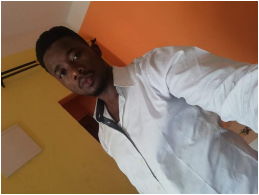

À propos de moi
Je suis Panauld Fankam, un passionné de technologie et de rénovation, animé par une soif constante de connaissances et de défis. Mon parcours académique a débuté à l'Institut Universitaire de Technologie de Douala, au Cameroun, où j'ai obtenu un diplôme de licence en technologie en réseaux et télécommunications. Cette formation, équivalente à un baccalauréat au Canada, m'a fourni une base solide dans le domaine des communications et des technologies de l'information.
En dehors de ma passion pour la technologie, je suis également un entrepreneur dans l'âme. J'ai dirigé un comptoir de vente de chaussures, de vêtements et de sous-vêtements pour dames, démontrant ainsi mon esprit d'entreprise et ma capacité à gérer une entreprise prospère. Actuellement, je travaille sur la relance de cette entreprise, cherchant à l'étendre et à la faire prospérer partout où je me trouve.